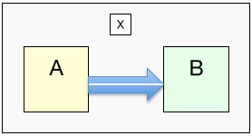
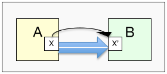
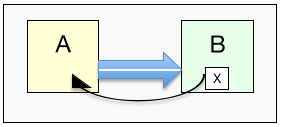
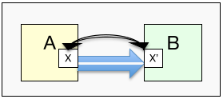

UD7. Programació modular. Funcions en Java
Introducció
Si un programa és molt llarg, és a dir, ocupa moltes línies de codi, tendix a complicar-se molt i a ser costón d'entendre.
Per tant, basant-nos en la idea de dividix i venceràs, farem ús de la tècnica coneguda com descomposició modular, amb la qual cosa es descompon el programa (mòdul) en mòduls més xicotets i, per tant, més fàcils d'entendre. Eixe procés també és conegut com disseny descendent o top-down.
graph TD
A[PROGRAMA PRINCIPAL]
A --> B[SUBPROBLEMA A]
A --> C[SUBPROBLEMA B]
B --> B1[SUBPROBLEMA A.1]
B --> B2[SUBPROBLEMA A.2]
C --> C1[SUBPROBLEMA B.1]
C --> C2[SUBPROBLEMA B.2]
C --> C3[SUBPROBLEMA B.3]Això s'aconseguix amb les subrutines. També anomenades subprogrames, funcions o procediments. O bé, mètodes, en el cas de llenguatges orientats a objectes, com Java.
Cal anar fent eixa descomposició successivament. Però fins quan? Hem de parar de descompondre quan un mòdul (o funció, mètode...) faça una feina molt concreta.
Altre avantatge que aconseguim amb les subrutines és no haver de repetir constantment fragments de codi.
Tipus de subrutines: procediments i funcions
Una subrutina és un bloc d'instruccions que executa una tasca concreta i a la qual se li dona un nom. Esta subrutina és invocada des d'altra o altres subrutines.
Per emprar una subrutina cal fer:
- Definir la subrutina (nomes 1 vegada).
- Invocar (usar, cridar) eixa subrutina sempre que ho necessitem.
Depenent de si la subrutina ha de retornar un valor o no, serà diferent eixa definició de la subrutina i les invocacions a ella. Per tant, cal distingir 2 tipus de subrutines:
- Procediments: no retornen cap valor
- Funcions: retornen un valor
Podem pensar que una subrutina és com una màquina a la qual se li entren unes dades i fa unes accions determinades segons eixes dades. Si la màquina fa eixir alguna cosa fora d'ella direm que és una funció. Si no, és un procediment.
FUNCIÓ
Una funció podria ser com una màquina de café:
- Entrada: la selecció del tipus de café, quantitat de sucre...
- Accions: preparar el café
- Eixida: el café
PROCEDIMENT
Un procediment podria ser com una màquina de pinball:
- Entrada: les pulsacions dels botons
- Accions: moure la boleta i mostrar punts per pantalla
- Eixida: (res)
Procediments
Procediments sense paràmetre d'entrada
Però ara pensem que estaria bé poder iniciar cada vegada que posem una línia, quants guionets volem pintar. Per a fer això, caldrà dir-ho en la crida al procediment i, clar està, també a la definició del procediment:
Exemple de subrituna
Els valors que fan d'ellaç entre les 2 rutines que es comuniquen s'anomenen paràmetres:
- Paràmetres actuals: són els que s'envien a la subrituna. Poden ser constants, variables o expressions.
- Paràmetres formals: són els que rep la subrutina (les variables que estan en la definicó de la funció, només poden ser variables).
En qualsevol moment podem eixir d'un procediment amb una sentència return;, encara que és recomanable no posar-lo i eixir en l'última instrucció del procediment.
Més avantatges d'usar subrutines:
- Podem aprofitar un mateix tros de codi per a fer coses amb diferents valors o variables.
- Podem escriure eixe tros de codi sense saber el nom de les variables amb les quals es cridarà a la subrutina.
A l'exemple anterior hem passat un paràmetre al procediment. Per a fer això hem hagut de modificar la crida i definició del procediment. Una subrutina pot tindre tots els paràmetres que necessiten. Pensem per exemple, que també volem donar-li el caràcter amb el qual ha de pintar la línia. Calrien 2 paràmetres:
Exemple de subrutina amb 2 paràmetres
| Java | |
|---|---|
- Crida a la subrutina
Tractarem el "caràcter" com a String i no Char per simplificar el codi.
Com veiem, quan es crida a una subrutina, el valor del 1r paràmetre de la crida es copia en el 1r paràmetre de la definició de la subrutina; el 2n en el 2n...
Resumint el que hem vist de procediment: quan s'invoca un procediment, este fa una tasca determinada, acaba després de l'última sentència (o bé, quan ve una sentència return) i torna a cedir el control a on s'havia fet la crida.
Ara bé: els procediments poden tindre paràmetres d'entrada però no d'eixida. No retornen cap valor. Després vorem que les funcions (a més de poder tindre paràmetres d'entrada) sí que tenen un paràmetre d'eixida: retornaran un valor a qui ha invocat la funció.
Exercici 1. Procediments
Fes un programa anomenat ProvesProcediments. En ell fes els procediments que es detallen i prova'l amb crides des del main.
Fes un procediment anomenat maxim al quan li passes 2 enters com a paràmetres. El procediment haurà de mostrar el màxima dels 2 números.
Exercici 2
Prova el procediment anterior fent crides des del main:
- Mostra el més gran entre el 10 i el 20, fent una crida a "maxim".
- Demana 2 números per teclat i mostra el major usant "maxim".
Exercici 3
Fes els següents procediments sobre figures geomètriques:
3.1. Fes el procediment rectangle, el qual rep 3 paràmetres:
- Un enter indicant la quantitat de files
- Un enter indicant la quantitat de columnes
- Un caràcter
El procediment ha de mostrar un rectangle amb eixe caràcter i amb tantes files i columnes com indiquen els paràmetres. Exemple:
| Java | |
|---|---|
* * * *
* * * *
* * * *
3.2. Fes un altre procediment que es diga també rectangle però que només li passes la quantitat de files i de columnes. El procediment ha de pintar un rectangle d'eixes files i columnes però sempre amb el caràcter "X" (Pots passar-lo com a String, si és més fàcil). Nota: dins d'eixa funció només hi haurà una única instrucció (usa la funció anterior).
3.3. Fes un altre procediment anomenat quadrat, que rep només dos paràmetres: la longitud d'un costat i el caràcter amb el qual s'ha de pintar el quadrat. Nota: dins de la funció només hi haurà 1 única instrucció.
Exercici 4
Fes el procediment de nom titol, al qual li passes com a paràmetre una cadena de text (String) i ha de mostrar eixa cadena envoltada d'asteriscos. Per exemple:
| Java | |
|---|---|
Exercici 5
Procediment taulaMultiplicar al qual li passes un número de taula i et mostra la taula corresponent. El procediment també rebrà un caràcter, que serà una C o una D. Si és una D, mostrarà la taula decreixent. Per exemple, si li passem 22, D:
Exercici 6
Procediment repetirNumeros tal que, a partir d'un número n, mostre:
Funcions
Hem vist que un procediment podia tindre 0, 1 o molts paràmetres s'entrada. Les funcions també però, a més, també poden tindre 1 paràmetre de sortida. És a dir: les funcions poden calcular un valor i retornar-lo a qui invoca la funció.
Exemple de funció
Imagina que necessitem demanar per teclat un número enter entre un rang determinat de valors possibles, i que mentre no es tecletge un valor correcte, caldrà tornar-lo a demanar. Això es pot fer amb un bucle. Però si al llarg del programa necessitem demanar diversos números entre un rang, hauríem de copiar eixe bucle moltes vegades. Solució: fem un a subrutina (una funció) que retorne un enter correcte cada vegada que invoquem la funció:
| Java | |
|---|---|
- int enterCorrecte --> el paràmetre de sortida serà un int
- Podiem haver fet ús de funcionsIO, però per recordar com es feia sense fitxer de funcions...
- Moment on es retorne el valor (el paràmetre de sortida). Pot ser una constant, una variable o una expressió. En una funció pot haver més d'una sentència return.
És a dir: les funcions sí que retornen un valor, mitjançant la instrucció return. I el tipus de la informació que es retorna s'especifica en la declaració de la funció (en les procediments es posa void, ja que no retorna res).
IMPORTANT!
Les crides a les funcions (a diferència de les crides a procediments) han d'estar dins d'alguna expressió, ja que arrepleguen un valor. Han d'estar en una assignació de variable, en una condició, com a paràmetre d'altra funció (println...), etc.
- La crida a la funció està en una instrucció d'assignació.
- La crida a la funció està en una condició switch.
- La crida a la funció està en una expressió de concatencació de cadenes com a paràmetre de la funció println.
- Compte! Esta crida a la funció no està dins de cap expressió. Eixa crida no donarà error però no té sentit, ja que el valor retornat per la funció no és utilitzat en cap lloc (no estem guardant-lo en una variable ni estem usant-lo en cap expressió).
Notes:
- Dins la definició d'una subrutina poden haver crides a altres subrutines.
- En els paràmetres d'una subrutina poden haver crides a altres subrutines.
Altre exemple
El control de flux
Per si encara no ha quedat clar, anem a vore amb un exemple els passos que seguix el flux de control del programa quan hi ha crides a subrutines. Ho vorem amb un algorisme (no és de Java) ja que és igual per a qualsevol llenguatge de programació.
- S'executen les instruccions fins arribar a una crida a una funció (o procediment).
- Es copien els paràmetres actuals de la crida als corresponents paràmetres formals de la definició de la funció (el 2 es copia en la variable base i el 4 en la variable altura).
- Continua el flux de control per dins de la funció.
- Quan arriba la sentència return, es torna un valor a on s'ha fet la crida. En este cas es retorna el valor de la variable area. Com que eixa variable tenia el valor de 10, és com si ara tinguérem en el main la següent assignació: areatri = 10;
- Continua el flux de control per on s'havia quedat el main. És a dir, ara que ja se sap que el valor de area_triangle(5, 4) té el valor de 10, es fa l'assignació d'eixe 10 a la variable areatri.
- Continuen executant-se les instruccions del main fins una altra crida a altra funció (o a la mateixa).
Exercici 7. Funcions
Fes un programa anomenat ProvesFuncions. En ell fes les funcions que es demanen i prova-les amb crides des del main.
- Funció booleana esBixest que li passes com a paràmetre un any i retorna si és bixest o no. La funció no ha de demanar res per teclat ni mostrar res per pantalla. Un any és bixest només si complix alguna d'estes 2 condicions:
- és múltiple de 4 i no de 100 (per exemple, el 2008)
- és múltiple de 400 (per exemple, el 2000) Observem que, per exemple, l'any 1900 no és bixest.
Exercici 8
Funció dataLletra que li passes una data amb 3 enters (19,2,2009) i que retorne la data amb el format "19 de febrer de 2009". Utilitza un switch. Si és un mes incorrecte, que retorne directament "error". Després, es del main, crida a la funció amb la data que cregues convenient. Si és correcta, la mostres. Si no, mostra el text "Data incorrecta".
Exercici 9
Fes les següents funcions, que et serviran per a usar-les en altres Exercicis. Passa com a paràmetre a cadascuna el text que es mostrarà en pantalla:
| Text Only | |
|---|---|
1 2 3 4 | |
Exercici 10
Funció esTriangle que, a partir de 3 dades, retorne un booleà dient si eixes dades es poden correspondre amb les longituds d'un triangle o no. Nota: formaran triangle si cada costat és menor que la suma dels altres dos.
Exercici 11
Funció tipusTriangle que, a partir de les longituds dels costats, retorne el tipus de triangle: equilàter, isòsceles o escalé. O bé, "error" si les dades no es corresponen amb un triangle (utilitza la funció esTriangle).
Exercici 12
Funció factorial que, a partir d'un enter, retorne el factorial. Sabent que: - 0! = 1 - n! = 1 * 2 * ... * (n-1) * n
Exercici 13
Funció booleana numeroPrimer que diga si el número passat és primer o no (és a dir, si és divisible només per ell mateix i per 1).
Exercici 14
Funció booleana numeroPerfecte que diga si el número passat és perfecte o no. És a dir, si és igual a la suma dels seus divisors excepte ell. Per exemple, el 6 és perfecte perquè: - 6 = 1 + 2 + 3 (1, 2 i 3 són els divisors de 6, llevat del 6).
Exercici 15
Funció sumaPotencies que, a partir d'un número n, retorne un enter que serà el resultat de fer este càlcul: - 1¹ + 2² + 3³ + ... + n^n
Classificació dels mòduls
Hi ha distints tipus de mòduls. Anem a classificar-los atenent a distints criteris.
Segons el valor de retorn
- Funcions: retornen un valor al mòdul que l'ha invocat. El valor ha de ser arreplegat per una expressió. Per exemple, si la funció maxim() retorna el màxima de 2 nñumeros, la crida a eixa funció la trobarem a una expressió com per exemple k = maxim(i,j).
- Procediments: el mòdul no retorna cap valor, simplement fa una determinada feina i punt.
Segons el moment en què ha estat desenvolupat
- De llibreria: implementades prèviament i guardades als fitxers de llibreria (els fitxers .h de C), com per exemple printf, strlen, scanf, o directament les llibreries de classe de Java.
- De programa: la funció s'ha desenvolupat mentre féiem el programa.
Segons la quantitat de mòduls que el criden
- Subprograma: només l'invocarà un mòdul (normalment serà main).
- Rutina o subrutina: poden ser invocats per qualsevol mòdul.
Segons la situació respecte al mòdul que l'invoca
- Intern: quan està al mateix fitxer que el mòdul que invoca.
- Extern: quan està en un fitxer distint que el mòdul que invoca.
A partir d'això podem trobar altres avantatges de la descomposició modular:
- Reduix el temps de desenvolupament, usant mòduls ja implementats.
- Diversos programadors poden col·laborar en la resolució d'un problema.
- Millora la depuració, ja que podem anar corregint mòduls individualment.
- Facilita modificacions posteriors ja que els programes són més fàcils de llegir.
Variable globals i locals
Hi ha diferents tipus de variables depenent d'on es definisquen.
Comunicació entre les funcions
Quan una funció A invoca a una altra B, hi ha un possible intercanvi de dades. En este apartat vorem les formes en què es poden passar eixa informació.
Fromes de comunicació
Variables globals

Potser siga la forma més senzilla però es desaconsella el seu ús ja que:
- Les funcions que invoquen B han de saber el nom de les variables globals que usa B, etc.
- Les variables poden ser modificades en qualsevol lloc no desitjat i interessa restringir eixe accés.
Pas de paràmetres per valor

El paràmetre actual (X) es copia en el paràmetre formal (X') però si B modifica el valor de X', el valor de X no es vorà alterat.
X pot ser una constant, variable atòmica (no vector ni objecte) o una expressió. X' ha de ser una variable atòmica.
Valor retornat

B podrà passar un valor X a A mitjançant la instrucció return X.
A haurà de tindre la crida a B dins d'alguna expressió per a usar el valor retornat per B.
X pot ser una constant, variable (atòmica, array o objecte) o una expressió.
Pas de paràmetres per referència

El paràmetre actual (X) "es copia" en el paràmetre formal (X') i, a més, si B modifica el valor de X', el valor de X també es vorà alterat.
X i X' han de ser arrays (vectors o matrius) o objcetes. Ja vorem què son els objectes però per exemple, un ArrayList o un HashMap són objectes.